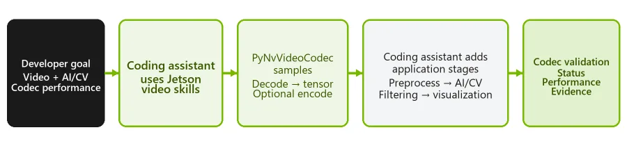

Source reconstruction for validation
This PDF is a compact, auditable reconstruction of the live English web article. The upstream source is HTML, not a PDF.
Article identity
Video is a core data path across NVIDIA Jetson applications, from robotics and intelligent video analytics to industrial automation, healthcare, media processing, and remote operations.
JetPack 7.2.1 adds support for PyNvVideoCodec 2.2 and foundational agentic video skills above the Video Codec SDK.
From prompt to verified pipeline
A prompt such as “How many H.264 1080p30 streams can this Jetson run for a low-latency use case?” depends on installed software, operational codec capabilities, the memory path, and a controlled run.
Foundational skills for Jetson video workflows
- Discover, set up, and report capabilities.
- Generate encoder recipes.
- Benchmark performance and quality.
- Validate the codec workflow.
Build an AI video pipeline
Inspect and configure; decode into framework data; complete the application flow; measure and verify.

Choose the interface
| Interface | Use it when |
|---|---|
| GStreamer | Composable multimedia graph |
| V4L2 | Direct Linux camera/device/buffer control |
| Video Codec SDK | Fine-grained C/C++ NVENC/NVDEC control |
| PyNvVideoCodec | Python and AI framework integration |
T3000 emulation
The Jetson T3000 delivers 865 FP4 TFLOPS. JetPack 7.2.1 can emulate T3000 performance on a Jetson T5000 module.
Resources and authors
Ten get-started resources and biographies for all five authors are preserved in the Korean translation.